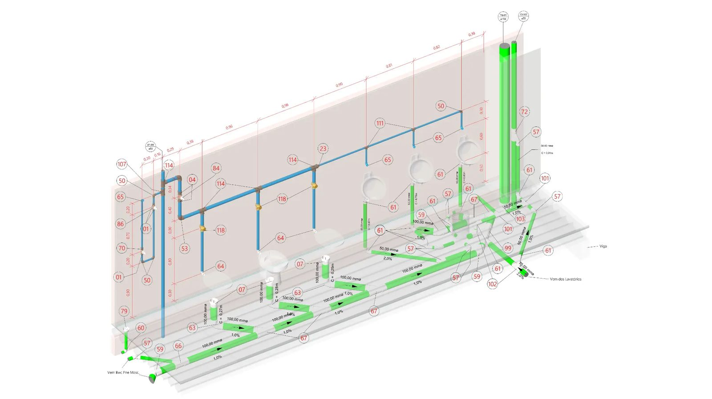
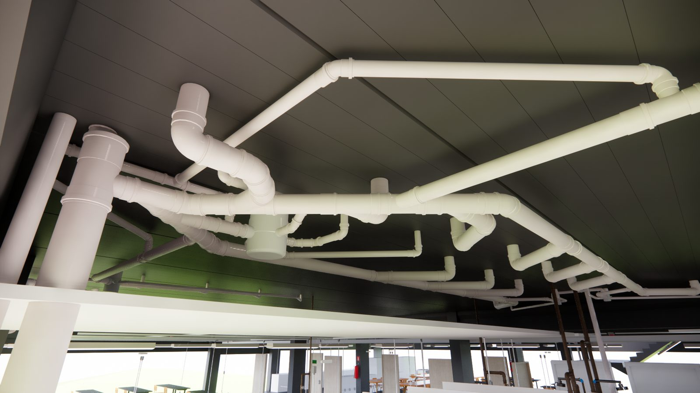
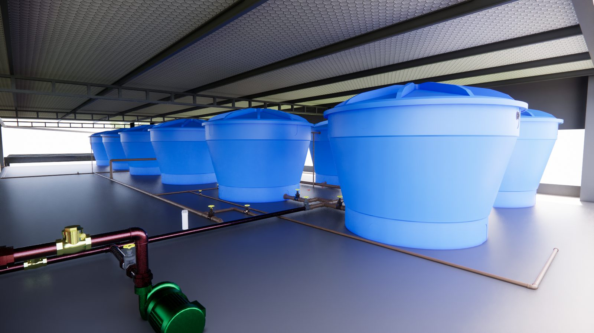
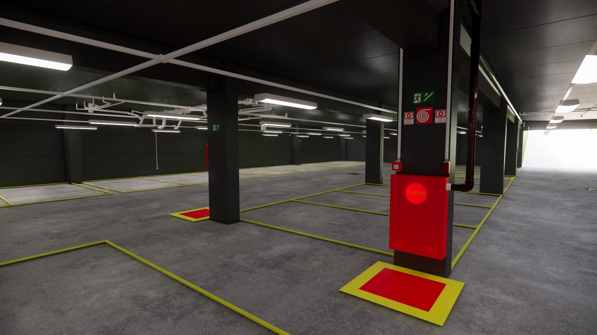

Nossas soluções BIM vão além do 3D, integrando dados para decisões precisas e custos controlados.
O BIM aplicado pela UCHOA é uma camada estratégica entre projeto, orçamento e obra. O modelo deixa de ser apenas uma representação visual e passa a funcionar como uma base confiável para compatibilização, levantamento de quantitativos, orçamento executivo, planejamento e rastreabilidade técnica.
Serviços BIM
Conversão de projetos 2D em modelos BIM organizados por disciplina, com parâmetros úteis para documentação, análise e quantitativos.
Arquitetura, estrutura e complementares modeladas com padrão, nível de informação e foco no uso prático do modelo.
Compatibilização, análise de interferências, organização de revisões e apoio à tomada de decisão entre equipes técnicas.
Levantamentos orientados por elementos, com critérios de medição claros para orçamento executivo e controle.
Conexão entre modelo, quantitativos, composições e custos para uma leitura executiva e rastreável.
Galeria técnica





Perguntas frequentes
Solicite uma consultoria e veja como o BIM pode dar previsibilidade à sua obra.
Solicite uma Consultoria BIM